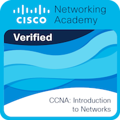

Leon Wasiliew
IT Programming Student at NSCC | Learning Support
Hello, World! My name is Leon Wasiliew, and I am currently studying IT Programming at NSCC. I enjoy exploring new technologies and applying my skills to solve real-world problems.
Technical Skills
Programming Languages
Python, Bash, C, C++, C#, Java, Kotlin, JavaScript, PHP
Web Development
HTML5, CSS3, JavaScript, React, Vite, Tailwind CSS, Bootstrap
Cloud Technologies
Azure, AWS, Microsoft Intune
Databases
MySQL, SQLite, MariaDB
Tools & Workflows
Git, Jira, Visual Studio, VS Code, Android Studio, IntelliJ IDEA
Testing & Automation
Automation Scripts, GitHub Actions, CI/CD Pipelines
Soft Skills
Problem Solving
Individual and collaborative problem-solving
Communication
Clear technical communication
Adaptability
Adaptability to new tools and technologies
Teamwork
Collaborative teamwork in agile environments
Attention to Detail
Attention to detail in code and documentation
Work Ethic
Professional and reliable work ethic
Achievements
Capstone Project
Led the frontend development and interface design for the SIRE Capstone project while contributing to planning, documentation, and presentations.
Cooperative Education (Co-op)
Participated in a successful co-op placement as an IT Intern at the Municipality of the County of Annapolis, aiding the IT department with daily operations, and contributing to various individual and team projects.
Peer Assisted Learning Support (PALS)
Employed as a Peer Assisted Learning Support (PALS) Provider for the IT Programming program (2025-2026), facilitating one-on-one bookings for various programming courses, including Windows, Linux, Office 365, and Programming Fundamentals and Languages.
Cisco Certified Network Associate (CCNA) Certification
Enrolled in the Cisco Certified Network Associate (CCNA) certification program, successfully completing the course and passing the CCNA exam, demonstrating proficiency in networking fundamentals, IP connectivity, and security fundamentals.

View CertificateProjects
Second Year Projects
First Year Projects
Documentation
SIRE - Simulated Incident Response Environment
Documentation for the SIRE Capstone project that provides a comprehensive overview of the project, the development process, and the final outcomes.
- Project Charter
- Team Charter
- Software Requirements Specification (SRS)
- System Design & Architecture
- System Implementation
- Testing
- Conclusion
- References
- Appendices
GitHub Portfolio
Documentation for the GitHub portfolio that outlines the overall structure, design decisions, dynamic functionality, and development process behind the webpage.
- Portfolio Overview
- Site Structure
- Design with Tailwind CSS
- Dynamic Project Loading
- Version Control with Git
- Old vs. New Portfolio
- Conclusion
- References
Reflection
Learning Journey
Throughout the two-year academic period in the IT Programming program at NSCC COGS (Fall 2024 to Spring 2026), I encountered many experiences that shaped both my technical and personal development. My first exposure to the program came during a campus visit, where I attended a database class taught by David Kristiansen. That experience sparked further curiosity in the IT field.
Although I love programming, as I had already been learning Python for about half a year prior to starting the program, I quickly developed an appreciation for other areas such as databases and data management.
During my first semester, our class consisted of around 18 students. At that time, I mainly viewed others simply as classmates. However, in the second semester, I became more open and collaborative, which improved my learning experience and communication skills. One of my favorite courses during this time was PROG1700 - Introduction to Logic and Programming, where I developed a strong foundation in programming concepts using Python, including modular design and file-based functionality.
In addition to programming, courses related to Windows OS and networking increased my interest in administrative roles within IT.
During the summer between Year 1 and Year 2, I completed a co-op placement as an IT Intern at the Municipality of the County of Annapolis (May-August 2025). This experience allowed me to apply classroom knowledge in a real-world environment, including working with ticket systems, onboarding and offboarding processes, and both individual and team-based projects.
In my second year, the class size became smaller, but the group grew more friendly. One of my favorite courses during this time was PROG2100 - Programming in C++, which introduced more advanced programming concepts and deeper object-oriented design principles.
During the final semester, two courses stood out. The first was PROG3300 - Integrated Project for Programming, where I worked in a team of four on a capstone project called SIRE (Simulated Incident Response Environment). As the Frontend Developer and UI/UX Lead, I contributed to the design and development of a full-stack JavaScript application.
The second was ICOM3010 - Self-Directed Study, where I designed and completed my own course titled "PROG1800 - Introduction to Embedded Systems - C++." I completed 97 hours of self-directed study, exceeding the expected 87 hours, and developed two projects: an intruder detection system and a motor system.
Overall, this program exposed me to many different areas within IT in a short period of time. The program reinforced my interest in the field and showed me how broad and diverse the opportunities are.
Learning Journey
One of the main challenges I faced throughout the program was time management. This was something I struggled with from the beginning, but I showed improvement by prioritizing tasks and learning to avoid unnecessary perfectionism.
Communication within teams was another area that presented challenges. At times, when communication was low, I attempted to follow up, but if the lack of response continued, I assumed others were managing their responsibilities independently. This occasionally led to misalignment in group work.
On the technical side, I typically did not struggle with understanding concepts, as I was also supporting peers in my role as a PALS Provider. However, navigating the broader IT landscape presented challenges, particularly with the increasing influence of AI.
I believe AI should be used as a tool to support learning rather than replace it. For example, I use tools like Grammarly to refine my writing after completing my own work. I have also used AI for project management and coding. An example of this would be the assignment where I applied Spec-Driven Development using Kiro to build the Seed Growth Simulator.
To me, using AI is similar to using a calculator. It should assist you, but the direction and understanding must still come from the individual.
Interview Experience
Throughout my time at NSCC, I participated in four IT-related interviews. These included a co-op interview for the Municipality of the County of Annapolis in 2025, an interview for the PALS Provider position, a mock interview as part of the ICOM2703 course, and another interview for an IT Intern position in 2026.
All of these experiences were positive, and I was successful in securing positions for each of the real opportunities.
I believe I perform well in interviews, but I also recognize that reaching that stage requires a strong resume and a lot of preparation.
Successfully secured positions from all real interviews.
Future Improvement
As for what is to come, I have identified several key areas for growth that I plan to focus on as I continue developing my skills and experience in the IT field:
- Learn modern technologies and industry practices
- Improve time management and efficiency
- Explore different areas within IT
- Strengthen ability to support others
Career Goals
My long-term goal is to have a stable career in IT where I can collaborate with a team and contribute meaningful ideas. I also want to be in an environment where I can grow professionally while also helping others succeed.
Through my experience as a PALS Provider, I discovered that I enjoy helping others understand technical concepts. This has influenced my interest in eventually taking on roles such as a mentor, tutor, or instructor once I gain more technical experience.
In the near future, I am interested in pursuing roles related to IT administration and security, while also using my programming knowledge to automate tasks and workflows, develop tools and applications, and improve system efficiency.